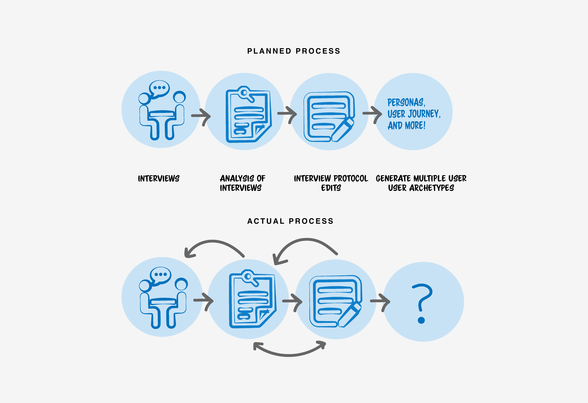

Project Type
Summer Internship
Role
UX Design Intern
Duration
April to July 2018
Skills
Qualitative Analysis, Sketching, Wireframing, Prototyping, Usability Tests.
Overview
During a three month internship at Nutanix, Inc. I had the opportunity to explore four projects in differnt modules of the Nutanix Prism. Apart from work, my weeks were packed with networking events, bootcamps, and intern outings. Here's a quick walkthrough of the highlights my first UX internship!
Due to the NDA agreement, I will be focussing on key takeaways from each project.
Creating User Archetypes
Goal was to talk to users and create archetypes from qualitative data. For me this was a way to quickly learn about the product from users themselves.

Redesign File Server Creation
Goal was to improve usability and simplify File Server creation process. It gave me an opportunity to apply my interaction design skills to an enterprise product.

Network Visualizations
Goal was to represent complex networks spanning buildings - on a single screen. It highlighted the need for simplication of complex systems which are used everyday.
Feature Creation
Ideate on a new feature with PMs, engineers, and designers. Gave me the opportunity to talk to multiple key stakeholders.